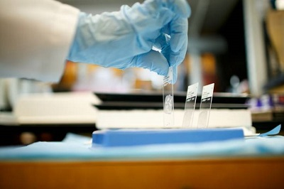

The department of Histopathology provides comprehensive services for regular and specialized processing of all surgical and cytological specimens. The service includes a vast range of exclusive techniques including immunohistochemistry, macrosectioning for complex lesions, frozen sections, lymph node recovery by lipid extraction and immunofluorescence.
Using sophisticated technology, our histopathology testing options provide fast and effective results. These services have been designed to deliver quality results while at all times offering cost effectiveness.
Histopathology technicians at Medicure Pulse Diagnostics are reputed within the industry for the speed and quality of diagnosis they provide. Histopathology team is dedicated to provide the highest level of diagnostic service which is always evidenced by the exceptional level of analysis and clinical excellence this service brings to the clients.
We offer a comprehensive service for surgical pathology and cytology.
SPECIMEN COLLECTION AND FIXATION
Specimens should be placed in formal saline for fixation as soon as possible except:
Bowel resections - these should be sent to the laboratory unfixed
Specimens requiring electron microscopy - please contact us for appropriate fixatives
Frozen sections - these should be immediately transported directly to the histology laboratory
Tissue for immunofluorescence studies - these should be sent to the laboratory unfixed in transport medium, which can be obtained from the laboratory
Testicular biopsies - should be placed in special fixative (Bouin’s fluid) available from the laboratory on request
Formalin-fixed tissue is unsuitable for bacteriological examination. If this is required please send either two separate pots or fresh tissue and contact the laboratory immediately so that appropriate arrangements can be made to divide the specimen.
Buffered formal saline and small pre-filled specimen pots are available from the department on request. Large specimen buckets are available from our stores department.
To ensure the slides are available for our pathologists to report on the next day, fixed or small unfixed specimens need to be received before 5pm and labelled as urgent.
If samples need to be reported urgently or are for same-day processing, we will need to receive the samples by 10am. To arrange this service please contact the department directly.
Larger specimens or bone requiring decalcification may require a longer reporting time period.
∘ Home
∘ About Us
∘ services
∘ Contact us
Pathological Test
Digital X-RAY & ECG
Histopathology
Ultrasound
OUR TIMINGS:
Working Days:-
MONDAY - SUNDAY
7AM - 11PM